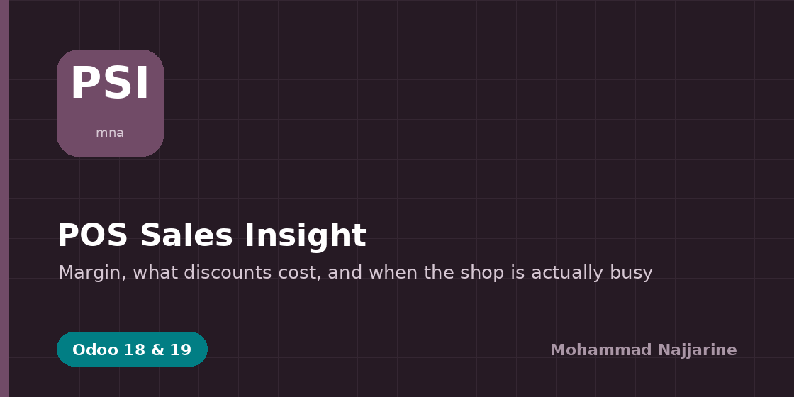
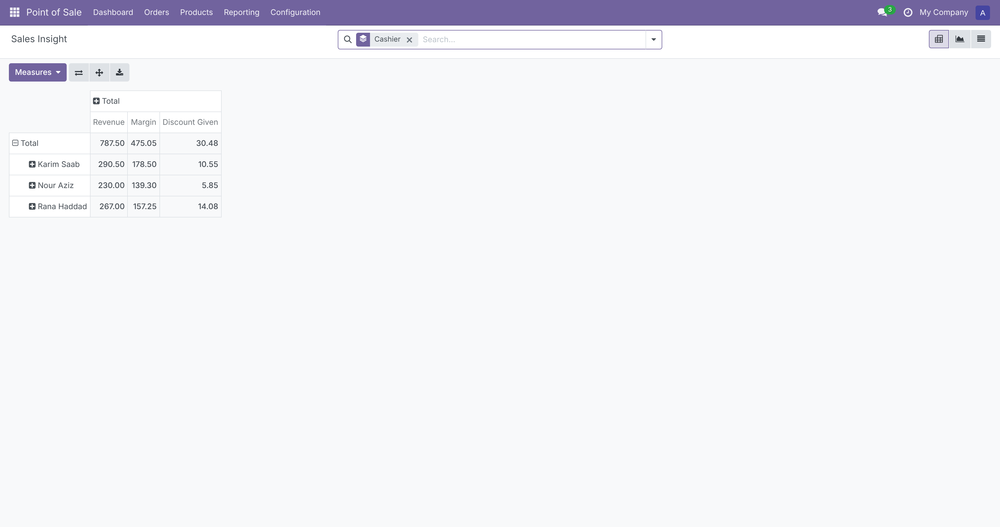
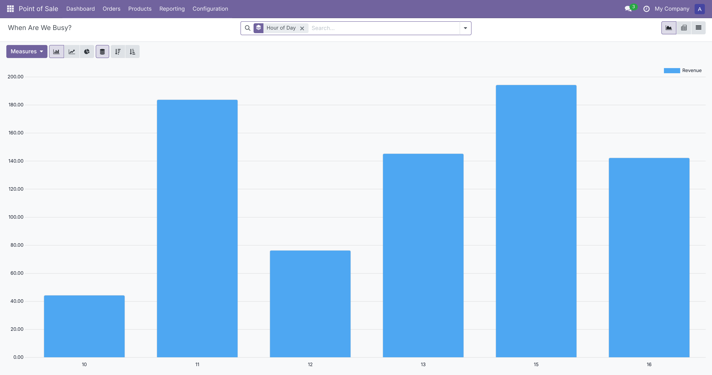

Odoo's own Point of Sale report tells you what you sold. It does not tell you what you made on it, what the discounts cost, or when the shop is actually busy. This adds one report that does, alongside the standard one rather than replacing it.
Free and open source under LGPL-3.
From the cost actually recorded, with margin percent alongside.
In money rather than in percent, which is the number that stings.
Hour of day and day of week, so you can staff against the real peak.
Cashier, product, category, customer and point of sale, in a pivot.
Revenue, margin and discount given, grouped however you like. The standard report stops at revenue.

One click to the hour of day chart. This is the view that changes a rota.

The hour is computed per row in the timezone of the order's own company, not in UTC. A shop in Beirut that is busiest at 7pm shows a peak at 17:00 in a UTC report, and someone will build next month's rota on that.
A POS line with no cost recorded has a margin equal to its whole revenue, which flatters any total it lands in. Those lines are marked, and there is a filter to find them.
| Odoo | 18.0 and 19.0, Community or Enterprise |
| Depends on | Point of Sale only |
| Licence | LGPL-3, free |
| Tested | 8 automated tests, including the timezone of the peak hour |
Written and maintained by Mohammad Najjarine, Odoo consultant. Questions, bug reports and customisation requests are answered.
Message me on WhatsApp Code and issues on GitHub
Phone and WhatsApp +961 71 835279